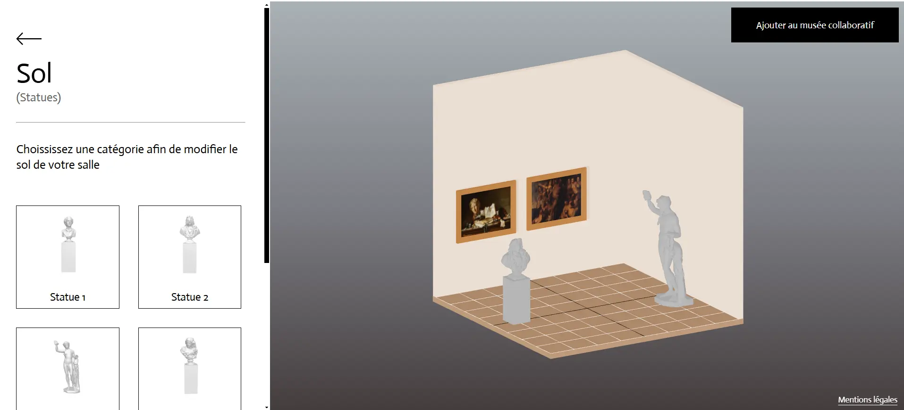
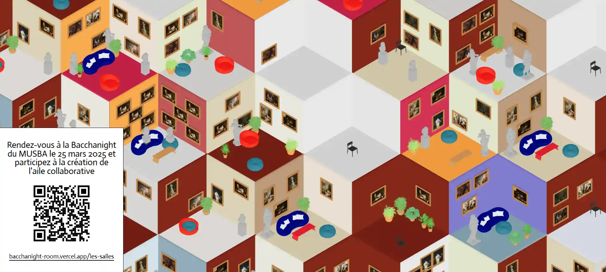

Refonte de site d’un musée
Le site s’adapte à toute taille d’écran et à été pensé pour être accessible.
En 2 semaines, nous avons commencé à préparer un projet pour la Bacchanight, une soirée organisée par le Musée d'Aquitaine de Bordeaux. Nous avons proposé une application web collaborative pour les visiteurs, qui créeront leur propre salle de musée, en y ajoutant des œuvres, du mobilier et de la couleur. Découvrez-en plus ↓
Lien du site ↗
Nous sommes partis sur React, React Three Fiber et express js pour le serveur. Une fois la salle finie, l'image est créée depuis le canvas puis envoyée à un serveur local (pour des raisons de performances et de bande passante limitée). Elle est compressée et redimentionnée pour apparaitre ensuite dans la gallerie collaborative, en temps (quasi) réel. Le lendemain, les images générées lors de la soirée ont été mises en ligne.

Voici une capture d'écran d'une partie de la fresque collaborative qui a été créée par les visiteurs lors de la bacchanight.
J'étais avec Billel Tighidet, Thomas Riquier, Edgar Quéméré, Alexis Juhel et Antoine Corberand.
Lien de la fresque ↗